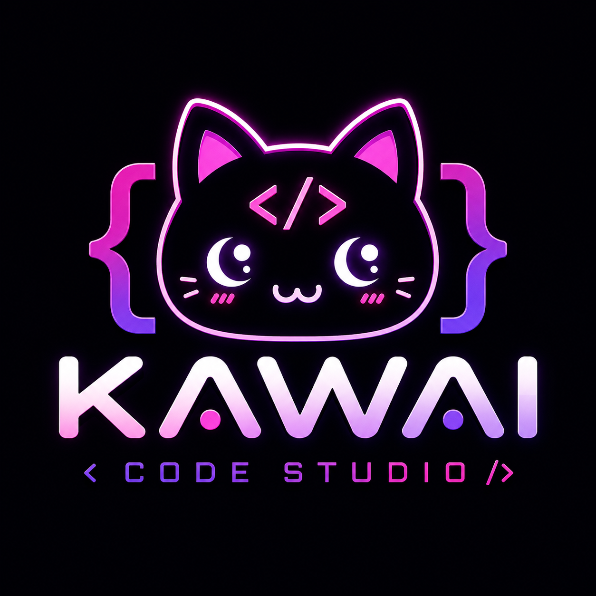

Bem vindo a minha pagina deste portifolio
Aqui irei falar e apresentar alguns trabalho produzidos por mim e meus colegas e falar um pouco sobre mim.
Meu nome é Pedro Willians de Paula Mariano, sou de São Vicente/SP e gosto muito de jogar video games e comer.
Trabalhos Feitos por mim e meus colegas
Site da Diversidade
Esse foi um trabalho feito por mim e meu colega Lucas Lima, esse site tinha como proposta sortear uma das siglas do gênero LGBTQIAPN+ e falar um pouco sobre ela. A sigla sorteada para mim e minha dupla foi o "O" de "Omnisexual", em sumo deveriamos fazer um site falando sobre o geral dos LGBT's e sobre a sigla sorteada, e foi assim que fizemos, a pagina principal ficou responsavel por falar sobre o geral dos LGBT's e a pagina secundaria ficou responsavel por falar sobre a sigla sorteada, tambem fizemos um mascotezinho, slogans e falamos sobre manifestos e sobre as paradas LGBT's consideradas as mais importantes, abaixo estará o link do site para que você possa acessá-lo caso desejar.Clique aqui para acessar o site
CosplayCon
Esse foi um trabalho feito por mim, DiegoLuka, Eloah e Rodrigo Gouveia, esse trabalho tinha como proposta a organização de um evento de cosplay, e para tinhamos que seguir algumas regras, como por exemplo, o evento deveria ser em um espaço fechado que já tem um espaço definido, e lojas que já aviam sido definidas, nós criamos o grupo com o nome de "Kawaii Code Studio"

Site Doe+ 013
Nesse trabalho nos foi dado a proposta de criar uma site/prototipo de qualquer tema que quisessemos, ele foi feito por mim, DiegoLuka, Enzo, Lucas Lima e Pedro Henrique, o tema que escolhemos foi a doação de sangue, o nome da nossa empresa foi "Sangue bom" e nome do projeto foi "Doe+ 013", o site tinha como objetivo e função informar e conscientizar as pessoas sobre a importância da doação de sangue, para auxiliar a população a encontrar locais de doação de sangue, fizemos uma conexão com o google maps, para facilitar a localização de locais de doação, e também fizemos uma conexão com postos de sangue para que cada posto mostrasse qual sangue estava em falta para que eles saibam quais tipos de sangue são mais necessários em cada posto, abaixo estará o link para acesso caso desejar.
Clique aqui para acessar o site